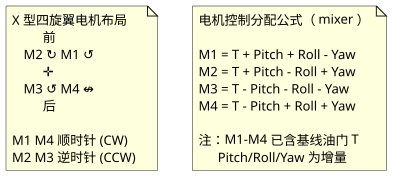
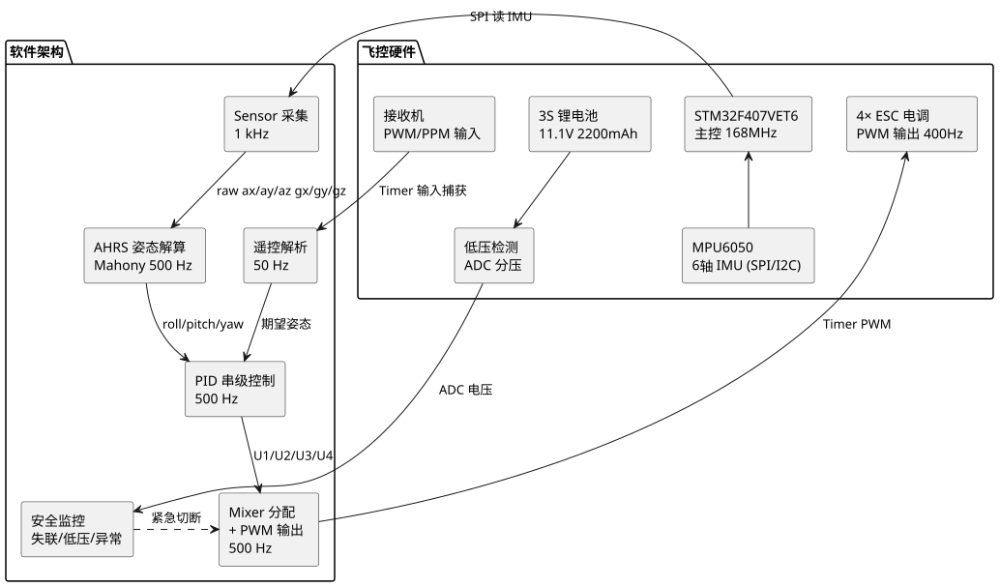
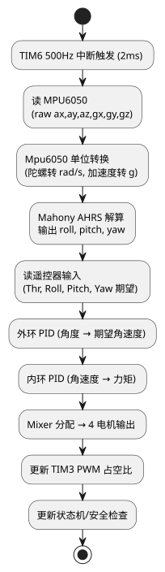
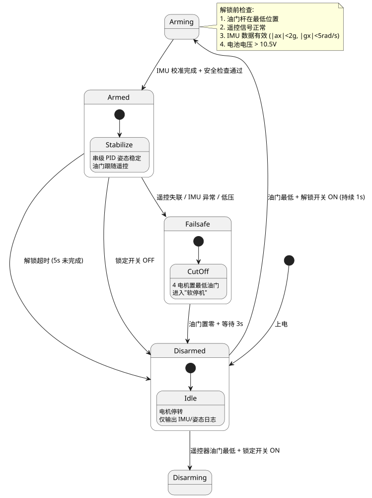

第 45 章 四旋翼无人机（STM32F407 飞控）
学习目标
- 理解四旋翼无人机的飞行原理（升力、俯仰、横滚、偏航四个基本运动）
- 掌握飞控硬件选型与电气连接方法（电机/电调/IMU/电池/遥控）
- 理解姿态解算的基本原理（互补滤波与 Mahony/Madgwick AHRS 算法）
- 掌握串级 PID 控制器在姿态稳定中的应用与参数整定方法
- 能基于 STM32F407 + MPU6050 完成一个基础飞控系统的搭建与调试
45.1 项目需求分析
四旋翼无人机（Quadcopter）是典型的多旋翼飞行器，通过调节四个电机的转速差实现姿态控制。本项目基于 STM32F407 + MPU6050 六轴 IMU 搭建一个基础飞控系统，重点在于姿态稳定控制（悬停），不涉及 GPS 定位、航点飞行等高级功能。具体功能需求：
- 姿态感知：通过 MPU6050 实时获取三轴加速度与角速度，采样率 1 kHz。
- 姿态解算：使用 Mahony 互补滤波算法融合加速度计与陀螺仪，输出 Roll/Pitch 角，更新率 500 Hz。
- 姿态稳定：串级 PID 控制器（角度环外环 + 角速度环内环），输出四个电机目标转速，控制周期 500 Hz。
- 遥控输入：通过 PWM/PPM 接收机接收遥控器指令（油门、Yaw、Pitch、Roll），更新率 50 Hz。
- 电机输出：四个电调通过 PWM 信号控制（400 Hz DShot300 或传统 50 Hz PWM）。
- 安全保护：① 油门最低且遥控器开关触发时启动电机；② IMU 数据异常或遥控失联 1 秒自动切断电机；③ 电压低于 10.5 V（3S 锂电池）低压保护。
- 调试接口：UART 输出姿态/控制日志，便于地面站调参与 PID 整定。
45.2 飞行原理
四旋翼通过四个电机产生升力，并通过转速差产生姿态力矩。典型布局为"X 型"，四个电机编号 1-4，对角线上电机转向相同（同向为正反交错），用于抵消反扭矩。
45.2.1 升力与油门
每个电机产生的升力 $T_i$ 与转速 $\omega_i$ 平方成正比：
$$T_i = k_T \cdot \omega_i^2$$
其中 $k_T$ 为升力系数，由螺旋桨尺寸、桨距、空气密度决定。总升力 $T = T_1 + T_2 + T_3 + T_4$。当 $T > mg$（重力）时无人机加速上升，$T = mg$ 时悬停，$T < mg$ 时下降。油门控制四个电机同步增减转速，等价于改变总升力。
45.2.2 俯仰（Pitch）与横滚（Roll）
通过前后或左右电机的转速差产生力矩：
- Pitch（俯仰）：前电机减速、后电机加速 → 机头下俯（向前飞）；反之机头上仰（向后飞）。
- Roll（横滚）：左电机减速、右电机加速 → 机身向左倾斜（向左飞）；反之向右。
力矩公式：$\tau_{\text{pitch}} = L \cdot (T_{\text{rear}} - T_{\text{front}})$，$\tau_{\text{roll}} = L \cdot (T_{\text{right}} - T_{\text{left}})$，其中 $L$ 为电机到机身中心的力臂长度。
45.2.3 偏航（Yaw）
四旋翼通过对角线电机转速差产生偏航力矩：1、3 号电机（假设顺时针）加速、2、4 号电机（逆时针）减速 → 反扭矩不平衡 → 机身顺时针偏航；反之逆时针偏航。力矩公式：$\tau_{\text{yaw}} = k_\tau \cdot (\omega_1^2 + \omega_3^2 - \omega_2^2 - \omega_4^2)$。
45.2.4 控制分配（Mixer）
给定四个控制量：油门 $T$、Roll 期望 $\tau_r$、Pitch 期望 $\tau_p$、Yaw 期望 $\tau_y$，分配到四个电机的转速：

查看 PlantUML 源码
@startuml
skinparam defaultFontName "Microsoft YaHei"
skinparam backgroundColor #ffffff
skinparam componentStyle rectangle
note "X 型四旋翼电机布局\n 前\n M2 ↻ M1 ↺\n ✛\n M3 ↺ M4 ↮\n 后\n\nM1 M4 顺时针 (CW)\nM2 M3 逆时针 (CCW)" as N1
note "电机控制分配公式（ mixer ）\n\nM1 = T + Pitch + Roll - Yaw\nM2 = T + Pitch - Roll + Yaw\nM3 = T - Pitch - Roll - Yaw\nM4 = T - Pitch + Roll + Yaw\n\n注：M1-M4 已含基线油门 T\n Pitch/Roll/Yaw 为增量" as N2
N1 -[hidden]right- N2
@enduml实际工程中电机控制量还需做归一化（0-1）和饱和限幅（避免单电机超出 PWM 范围）。
45.3 系统架构设计

查看 PlantUML 源码
@startuml
skinparam defaultFontName "Microsoft YaHei"
skinparam backgroundColor #ffffff
skinparam componentStyle rectangle
package "飞控硬件" {
rectangle "STM32F407VET6\n主控 168MHz" as MCU
rectangle "MPU6050\n6轴 IMU (SPI/I2C)" as IMU
rectangle "接收机\nPWM/PPM 输入" as RX
rectangle "4× ESC 电调\nPWM 输出 400Hz" as ESC
rectangle "3S 锂电池\n11.1V 2200mAh" as BAT
rectangle "低压检测\nADC 分压" as VSENSE
}
package "软件架构" {
rectangle "Sensor 采集\n1 kHz" as S1
rectangle "AHRS 姿态解算\nMahony 500 Hz" as S2
rectangle "PID 串级控制\n500 Hz" as S3
rectangle "Mixer 分配\n+ PWM 输出\n500 Hz" as S4
rectangle "遥控解析\n50 Hz" as S5
rectangle "安全监控\n失联/低压/异常" as S6
}
MCU -down-> S1 : SPI 读 IMU
IMU -up-> MCU
RX -down-> S5 : Timer 输入捕获
S5 -down-> S3 : 期望姿态
S1 -down-> S2 : raw ax/ay/az gx/gy/gz
S2 -down-> S3 : roll/pitch/yaw
S3 -down-> S4 : U1/U2/U3/U4
S4 -down-> ESC : Timer PWM
BAT -down-> VSENSE
VSENSE -down-> S6 : ADC 电压
S6 .right.> S4 : 紧急切断
@enduml整个软件以定时器中断驱动的主控制循环为核心，500 Hz 周期（2 ms）。每次循环执行：① 读 IMU → ② AHRS 解算 → ③ 读遥控期望 → ④ PID 计算 → ⑤ Mixer 分配 → ⑥ PWM 输出。遥控解析、安全监控、UART 日志等慢任务在主循环或低优先级任务中执行。
45.4 硬件设计
45.4.1 主控选型
本项目选用 STM32F407VET6 作为飞控主控，原因：
- 168 MHz Cortex-M4F：FPU 加速浮点 PID 运算，2 ms 控制周期足够余量。
- 多路高级定时器：TIM1/TIM8 可同时输出 4-8 路 PWM，且支持中心对齐模式（适合电机控制）。
- 多路输入捕获：TIM2/TIM3/TIM4/TIM5 可同时捕获 4 路 PWM/PPM 遥控信号。
- SPI 高速 IMU 通信：MPU6050 在 SPI 模式下达 20 MHz，比 I2C 快 10 倍以上。
- 192 KB SRAM：足够 FreeRTOS + 大量浮点数组。
实际工程中也常用 STM32F411/F405（更小型化）、ESP32-S3（带 WiFi/BLE 可做图传）。
45.4.2 硬件清单
| 序号 | 器材 | 规格 | 数量 | 备注 |
|---|---|---|---|---|
| 1 | STM32F407VET6 最小系统 | 168 MHz, 192KB SRAM | 1 | 飞控主控 |
| 2 | MPU6050 模块 | 6 轴 IMU, SPI 接口 | 1 | 姿态感知 |
| 3 | 无刷电机 | 2207 2300KV (典型值) | 4 | 5 寸桨 |
| 4 | 电调 ESC | 30A BLHeli_S, DShot300 | 4 | — |
| 5 | 螺旋桨 | 5 寸三叶正反桨 | 2+2 | 正反各 2 |
| 6 | 3S 锂电池 | 11.1V 1500mAh 50C | 1 | — |
| 7 | 遥控接收机 | SBUS/PPM 输出 | 1 | 如 FS-iA6B |
| 8 | 机架 | 220mm 轴距轮距 | 1 | 5 寸机架 |
| 9 | 低压报警器 | 3S 锂电池低压蜂鸣 | 1 | — |
| 10 | ST-Link V2 | SWD 调试器 | 1 | 烧录调试 |
45.4.3 电气连接
| STM32 引脚 | 外设 | 连接对象 | 说明 |
|---|---|---|---|
| PA5/PA6/PA7 | SPI1 | MPU6050 (SCK/MISO/MOSI) | SPI 20 MHz |
| PC4 | GPIO | MPU6050 CS | 片选 |
| PA0/PA1/PA2/PA3 | TIM2_CH1-4 | 接收机 PPM | 输入捕获 50 Hz |
| PC6/PC7/PC8/PC9 | TIM3_CH1-4 | 4× 电调 PWM | 400 Hz, DShot300 |
| PA9/PA10 | USART1 | USB 转串口 | 调试日志 |
| PA4 | ADC1_IN4 | 电池电压分压 | 1:11 分压 |
| PB1 | GPIO | MPU6050 INT | 数据就绪中断 |
45.5 软件架构
45.5.1 主控制循环
使用 TIM6 触发 500 Hz 中断（2 ms 周期），在中断中执行完整控制流程。也可使用 FreeRTOS 任务 + 高优先级抢占，但本项目为简化代码用裸机中断。

查看 PlantUML 源码
@startuml
skinparam defaultFontName "Microsoft YaHei"
skinparam backgroundColor #ffffff
start
:TIM6 500Hz 中断触发 (2ms);
:读 MPU6050\n(raw ax,ay,az,gx,gy,gz);
:Mpu6050 单位转换\n(陀螺转 rad/s, 加速度转 g);
:Mahony AHRS 解算\n输出 roll, pitch, yaw;
:读遥控器输入\n(Thr, Roll, Pitch, Yaw 期望);
:外环 PID (角度 → 期望角速度);
:内环 PID (角速度 → 力矩);
:Mixer 分配 → 4 电机输出;
:更新 TIM3 PWM 占空比;
:更新状态机/安全检查;
stop
@enduml45.5.2 状态机

查看 PlantUML 源码
@startuml
skinparam defaultFontName "Microsoft YaHei"
skinparam backgroundColor #ffffff
[*] --> Disarmed : 上电
Disarmed --> Disarming : 遥控器油门最低 + 锁定开关 ON
Disarmed --> Arming : 油门最低 + 解锁开关 ON (持续 1s)
Arming --> Armed : IMU 校准完成 + 安全检查通过
Armed --> Disarmed : 解锁超时 (5s 未完成)
Armed --> Disarmed : 锁定开关 OFF
Armed --> Failsafe : 遥控失联 / IMU 异常 / 低压
Failsafe --> Disarmed : 油门置零 + 等待 3s
state Disarmed {
[*] --> Idle
Idle : 电机停转\n仅输出 IMU/姿态日志
}
state Armed {
[*] --> Stabilize
Stabilize : 串级 PID 姿态稳定\n油门跟随遥控
}
state Failsafe {
[*] --> CutOff
CutOff : 4 电机置最低油门\n进入"软停机"
}
note right of Arming
解锁前检查:
1. 油门杆在最低位置
2. 遥控信号正常
3. IMU 数据有效 (|ax|<2g, |gx|<5rad/s)
4. 电池电压 > 10.5V
end note
@enduml45.5.3 MPU6050 驱动（SPI）
MPU6050 通过 SPI 通信，关键寄存器：① PWR_MGMT_1（电源管理，唤醒+时钟源）；② GYRO_CONFIG（陀螺量程 ±2000°/s）；③ ACCEL_CONFIG（加速度量程 ±4g）；④ SMPRT_DIV（采样率分频，设 1 kHz）；⑤ INT_PIN_CFG + INT_ENABLE（数据就绪中断）。每次读 14 字节（ax/ay/az/temp/gx/gy/gz）。
/* mpu6050.c - SPI 驱动 MPU6050，1 kHz 数据就绪中断 */
#include "stm32f4xx_hal.h"
extern SPI_HandleTypeDef hspi1;
#define MPU_CS_LOW() HAL_GPIO_WritePin(GPIOC, GPIO_PIN_4, GPIO_PIN_RESET)
#define MPU_CS_HIGH() HAL_GPIO_WritePin(GPIOC, GPIO_PIN_4, GPIO_PIN_SET)
/* 写寄存器 */
void MPU_WriteReg(uint8_t reg, uint8_t val) {
MPU_CS_LOW();
uint8_t tx[2] = {reg & 0x7F, val}; /* bit7=0 写 */
HAL_SPI_Transmit(&hspi1, tx, 2, 10);
MPU_CS_HIGH();
}
/* 读寄存器 */
uint8_t MPU_ReadReg(uint8_t reg) {
MPU_CS_LOW();
uint8_t tx[2] = {reg | 0x80, 0xFF}; /* bit7=1 读 */
uint8_t rx[2];
HAL_SPI_TransmitReceive(&hspi1, tx, rx, 2, 10);
MPU_CS_HIGH();
return rx[1];
}
/* 读 14 字节原始数据 */
void MPU_ReadRaw(int16_t *ax, int16_t *ay, int16_t *az,
int16_t *gx, int16_t *gy, int16_t *gz)
{
uint8_t buf[14];
MPU_CS_LOW();
uint8_t tx[15] = {0x3B | 0x80}; /* ACCEL_XOUT_H 起始地址 */
uint8_t rx[15];
HAL_SPI_TransmitReceive(&hspi1, tx, rx, 15, 50);
MPU_CS_HIGH();
*ax = (rx[1]<<8) | rx[2];
*ay = (rx[3]<<8) | rx[4];
*az = (rx[5]<<8) | rx[6];
/* rx[7,8] 温度 */
*gx = (rx[9]<<8) | rx[10];
*gy = (rx[11]<<8) | rx[12];
*gz = (rx[13]<<8) | rx[14];
}
/* 初始化 MPU6050 */
void MPU_Init(void) {
HAL_Delay(100);
MPU_WriteReg(0x6B, 0x80); /* PWR_MGMT_1 复位 */
HAL_Delay(100);
MPU_WriteReg(0x6B, 0x01); /* 唤醒，时钟 PLL X 轴陀螺 */
MPU_WriteReg(0x1B, 0x18); /* GYRO ±2000°/s */
MPU_WriteReg(0x1C, 0x08); /* ACCEL ±4g */
MPU_WriteReg(0x19, 0x00); /* SMPRT_DIV 1kHz */
MPU_WriteReg(0x1A, 0x03); /* CONFIG DLPF 41Hz */
MPU_WriteReg(0x37, 0x10); /* INT_PIN_CFG 推挽低电平 */
MPU_WriteReg(0x38, 0x01); /* INT_ENABLE 数据就绪 */
}45.5.4 姿态解算（Mahony 互补滤波）
Mahony 算法用陀螺仪积分得到高频姿态，用加速度计向量叉积修正长期漂移。相比 Madgwick 计算量小，适合 STM32F4 高频更新。姿态用四元数表示避免欧拉角奇异。
/* ahrs.c - Mahony AHRS, 500 Hz 更新 */
#include <math.h>
static float q0 = 1.0f, q1 = 0.0f, q2 = 0.0f, q3 = 0.0f; /* 四元数 */
static float exInt = 0, eyInt = 0, ezInt = 0; /* 积分项 */
static float twoKp = 2.0f * 0.5f; /* 比例增益 */
static float twoKi = 2.0f * 0.0f; /* 积分增益 */
static float sampleFreq = 500.0f;
void Mahony_Update(float gx, float gy, float gz,
float ax, float ay, float az)
{
float recipNorm;
float vx, vy, vz;
float ex, ey, ez;
/* 加速度归一化 */
recipNorm = sqrtf(ax*ax + ay*ay + az*az);
if (recipNorm == 0.0f) return;
recipNorm = 1.0f / recipNorm;
ax *= recipNorm; ay *= recipNorm; az *= recipNorm;
/* 估计重力方向（由当前 q 推算） */
float q0q0 = q0*q0, q0q1 = q0*q1, q0q2 = q0*q2, q0q3 = q0*q3;
float q1q1 = q1*q1, q1q2 = q1*q2, q1q3 = q1*q3;
float q2q2 = q2*q2, q2q3 = q2*q3, q3q3 = q3*q3;
vx = 2.0f * (q1q3 - q0q2);
vy = 2.0f * (q0q1 + q2q3);
vz = q0q0 - q1q1 - q2q2 + q3q3;
/* 误差 = 测量 × 估计（叉积） */
ex = (ay*vz - az*vy);
ey = (az*vx - ax*vz);
ez = (ax*vy - ay*vx);
/* PI 反馈 */
exInt += ex * twoKi;
eyInt += ey * twoKi;
ezInt += ez * twoKi;
gx += twoKp*ex + exInt;
gy += twoKp*ey + eyInt;
gz += twoKp*ez + ezInt;
/* 四元数微分方程 */
gx *= (0.5f * (1.0f / sampleFreq));
gy *= (0.5f * (1.0f / sampleFreq));
gz *= (0.5f * (1.0f / sampleFreq));
float dq0 = (-q1*gx - q2*gy - q3*gz);
float dq1 = ( q0*gx + q2*gz - q3*gy);
float dq2 = ( q0*gy - q1*gz + q3*gx);
float dq3 = ( q0*gz + q1*gy - q2*gx);
q0 += dq0; q1 += dq1; q2 += dq2; q3 += dq3;
/* 归一化 */
recipNorm = sqrtf(q0*q0 + q1*q1 + q2*q2 + q3*q3);
recipNorm = 1.0f / recipNorm;
q0 *= recipNorm; q1 *= recipNorm; q2 *= recipNorm; q3 *= recipNorm;
}
/* 取欧拉角（度） */
void Mahony_GetEuler(float *roll, float *pitch, float *yaw)
{
*roll = atan2f(2.0f*(q0*q1 + q2*q3), 1.0f - 2.0f*(q1*q1 + q2*q2)) * 57.29578f;
*pitch = asinf(2.0f*(q0*q2 - q3*q1)) * 57.29578f;
*yaw = atan2f(2.0f*(q0*q3 + q1*q2), 1.0f - 2.0f*(q2*q2 + q3*q3)) * 57.29578f;
}45.5.5 串级 PID 控制器
采用串级 PID：外环控制角度（输入期望角度，输出期望角速度），内环控制角速度（输入期望角速度，输出力矩）。串级比单级响应更快、抗扰性更强，是飞控标配。
/* pid.c - 串级 PID，每个轴独立 */
typedef struct {
float kp, ki, kd;
float i_max;
float setpoint; /* 期望值 */
float input; /* 测量值 */
float err; /* 当前误差 */
float err_prev; /* 上次误差 */
float err_integ; /* 积分项 */
float out; /* 输出 */
} PID_t;
void PID_Init(PID_t *p, float kp, float ki, float kd, float i_max) {
p->kp = kp; p->ki = ki; p->kd = kd; p->i_max = i_max;
p->err = p->err_prev = p->err_integ = p->out = 0;
}
float PID_Update(PID_t *p, float setpoint, float input, float dt) {
p->setpoint = setpoint;
p->input = input;
p->err = setpoint - input;
/* 积分（带抗饱和） */
p->err_integ += p->err * dt;
if (p->err_integ > p->i_max) p->err_integ = p->i_max;
if (p->err_integ < -p->i_max) p->err_integ = -p->i_max;
/* 微分（差分） */
float deriv = (p->err - p->err_prev) / dt;
p->err_prev = p->err;
/* 输出 */
p->out = p->kp * p->err + p->ki * p->err_integ + p->kd * deriv;
return p->out;
}
/* 全局 PID 实例：roll/pitch/yaw 各两组（外环+内环） */
PID_t pid_roll_angle, pid_roll_rate;
PID_t pid_pitch_angle, pid_pitch_rate;
PID_t pid_yaw_rate; /* yaw 一般只用角速度环 */45.5.6 控制循环与 Mixer
/* main.c - 500 Hz 主控制循环 */
#include "stm32f4xx_hal.h"
#include <math.h>
volatile float g_roll = 0, g_pitch = 0, g_yaw = 0;
volatile float rx_thr = 0, rx_roll = 0, rx_pitch = 0, rx_yaw = 0;
volatile float motor[4] = {0, 0, 0, 0};
volatile int armed = 0;
extern TIM_HandleTypeDef htim3;
/* TIM6 中断：500 Hz 控制循环 */
void TIM6_DAC_IRQHandler(void) {
HAL_TIM_IRQHandler(&htim6);
int16_t ax, ay, az, gx, gy, gz;
MPU_ReadRaw(&ax, &ay, &az, &gx, &gy, &gz);
/* 单位换算 */
float fax = ax / 8192.0f; /* ±4g LSB */
float fay = ay / 8192.0f;
float faz = az / 8192.0f;
float fgx = gx * (M_PI / 180.0f) / 16.4f; /* ±2000°/s LSB → rad/s */
float fgy = gy * (M_PI / 180.0f) / 16.4f;
float fgz = gz * (M_PI / 180.0f) / 16.4f;
/* 姿态解算 */
Mahony_Update(fgx, fgy, fgz, fax, fay, faz);
Mahony_GetEuler((float*)&g_roll, (float*)&g_pitch, (float*)&g_yaw);
if (!armed) {
/* 解锁前：电机停转，仅输出日志 */
motor[0] = motor[1] = motor[2] = motor[3] = 0;
PWM_Output(motor);
return;
}
/* 期望姿态（来自遥控器，限幅 ±30°） */
float roll_des = rx_roll * 30.0f;
float pitch_des = rx_pitch * 30.0f;
float yaw_rate_des = rx_yaw * 200.0f;
/* 串级 PID */
float dt = 0.002f; /* 500 Hz */
float roll_rate_des = PID_Update(&pid_roll_angle, roll_des, g_roll, dt);
float pitch_rate_des = PID_Update(&pid_pitch_angle, pitch_des, g_pitch, dt);
float u_roll = PID_Update(&pid_roll_rate, roll_rate_des, fgx, dt);
float u_pitch = PID_Update(&pid_pitch_rate, pitch_rate_des, fgy, dt);
float u_yaw = PID_Update(&pid_yaw_rate, yaw_rate_des, fgz, dt);
/* Mixer: X 型布局
* M1 = T + Pitch + Roll - Yaw
* M2 = T + Pitch - Roll + Yaw
* M3 = T - Pitch - Roll - Yaw
* M4 = T - Pitch + Roll + Yaw
*/
float t = rx_thr; /* 0..1 油门 */
float m1 = t + u_pitch + u_roll - u_yaw;
float m2 = t + u_pitch - u_roll + u_yaw;
float m3 = t - u_pitch - u_roll - u_yaw;
float m4 = t - u_pitch + u_roll + u_yaw;
/* 饱和限幅 0..1 */
SAT(m1); SAT(m2); SAT(m3); SAT(m4);
motor[0] = m1; motor[1] = m2; motor[2] = m3; motor[3] = m4;
PWM_Output(motor);
}45.6 完整代码与工程结构
完整工程位于 /code/stm32f407/13-quadcopter/，目录结构如下：
13-quadcopter/
├── main.c # 主程序 + 状态机
├── mpu6050.c / mpu6050.h # MPU6050 SPI 驱动
├── ahrs.c / ahrs.h # Mahony 姿态解算
├── pid.c / pid.h # PID 控制器
├── mixer.c / mixer.h # 电机分配
├── pwm.c / pwm.h # TIM3 PWM 输出
├── rx.c / rx.h # 遥控器输入捕获
├── safety.c / safety.h # 安全监控
├── STM32CubeMX.ioc # CubeMX 工程配置
└── README.md # 编译烧录说明使用 STM32CubeIDE 或 Keil MDK + HAL 库开发，ST-Link 烧录。首次调试务必拆除螺旋桨，先验证 IMU 数据与遥控器响应正常，再进行 PID 整定。
45.7 PID 参数整定方法
PID 整定是飞控调试的核心，常用试凑法：
- 内环（角速度环）整定：① Ki=0, Kd=0，逐步增大 Kp 直到机身出现高频振荡；② Kp 减小 50%；③ 逐步增大 Kd 直到振荡消失但响应快；④ 适当加 Ki 消除稳态误差。
- 外环（角度环）整定：内环稳定后，外环 Kp 从 0.5 开始，逐次增大，达到快速跟踪且不振荡。
- Yaw 轴：一般只用角速度环（单环），Kp 取 Roll/Pitch 的 2-3 倍。
典型参数（仅参考，不同机架需重调）：内环 Kp=0.20, Ki=0.01, Kd=0.10；外环 Kp=4.0, Ki=0.0, Kd=0.0。
45.8 安全与扩展方向
安全保护：
- 解锁前检查：油门最低、遥控信号正常、IMU 数据有效、电池电压 > 10.5V。
- 失联保护：遥控信号 1 秒未更新，自动切断电机或维持油门 0。
- 低压保护：电池电压 < 10.5V（3S）触发 LED 闪烁报警；< 10.0V 自动降落。
- 姿态异常：roll/pitch 超过 60° 视为翻车，立即切断电机。
扩展方向：
- 气压计高度保持：增加 BMP280 气压计，实现定高悬停。
- GPS 定位：增加 u-blox M8N GPS，实现位置环 PID 与返航功能。
- 光流定位：下视摄像头光流传感器，室内悬停定位。
- 自主飞行：移植 PX4/INAV 开源飞控固件，支持航点任务。
- 图传：ESP32 + 摄像头做实时图传，FPV 飞行。
本章小结
- 四旋翼通过四个电机转速差产生升力与三轴姿态力矩，控制分配由 Mixer 公式实现。
- 硬件核心是 STM32F407 主控 + MPU6050 IMU + 4× 电调 + 接收机。
- 姿态解算用 Mahony 互补滤波融合陀螺与加速度计，输出欧拉角或四元数。
- 串级 PID（角度环外环 + 角速度环内环）是飞控标配，参数整定需先内环再外环。
- 500 Hz 控制循环由定时器中断驱动，包含传感→解算→控制→输出完整链路。
- 安全保护（解锁前检查、失联保护、低压保护、姿态异常）是飞控不可或缺的部分。
- 实际工程可扩展气压计、GPS、光流、图传等实现更高阶功能。
思考题与习题
- 推导 X 型四旋翼的 Mixer 公式，说明为什么对角线电机转向相同。
- 简述 Mahony 算法与 Madgwick 算法的区别，并说明为什么陀螺积分会漂移、加速度计可修正。
- 串级 PID 比单级 PID 有什么优势？为什么内环用角速度、外环用角度？
- 设计一个失联保护机制：遥控信号 1 秒未更新时自动切断电机，并恢复"解锁前"状态。给出代码思路。
- 已知电机升力系数 $k_T$、力臂 $L$、机身质量 $m$，推导悬停所需油门（归一化值）。
- 分析 DShot300 与传统 50 Hz PWM 电调协议的优缺点，并说明为什么飞控常用 DShot。
- 查阅 Betaflight 或 INAV 开源飞控源码，对比本章实现的差异，简述可借鉴的工程实践。
参考文献
- ST 官方. STM32F405/415/407/417 参考手册 RM0090 [Z]. 2024. https://www.st.com/
- InvenSense. MPU-6000/6050 Six-Axis MEMS Datasheet [Z]. 2013. https://invensense.tdk.com/
- Robert Mahony, Tarek Hamel, Jean-Michel Pflimlin. Nonlinear Complementary Filters on the Special Orthogonal Group [J]. IEEE Transactions on Automatic Control, 2008, 53(5): 1203-1218.
- S. Madgwick. An efficient orientation filter for inertial and inertial/magnetic sensor arrays [R]. 2010. https://www.x-io.co.uk/
- Betaflight 开源飞控. https://github.com/betaflight/betaflight
- PX4 Autopilot. https://github.com/PX4/PX4-Autopilot
- 全权. 多旋翼飞行器设计与控制 [M]. 北京：科学出版社, 2020.
- 陈志杰. 四旋翼无人机飞行控制算法综述 [J]. 控制与决策, 2022, 37(3): 1-15.